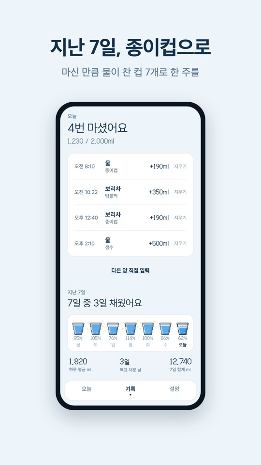

물 마시기 습관, 숫자 대신 컵으로 세기
"몇 ml 마셨지?" 대신 "몇 잔 마셨지?"
물 마시기 기록은 대개 사흘을 못 가요. 마실 때마다 ml를 적고 더하는 게 귀찮아서예요. 셈을 쉽게 바꾸면 오래 가요.
1. 내 컵 하나를 정해요
사무실이면 정수기 옆 종이컵(약 190ml), 들고 다니면 텀블러, 밖에선 생수 한 병(500ml). 자주 쓰는 컵 하나를 정하면 그다음부터는 "한 잔, 두 잔"만 세면 돼요.
2. 목표도 잔으로 바꿔요
하루 2L가 목표라면 종이컵으로 약 10잔 반이에요. "2,000ml"보다 "10잔"이 머릿속에 잘 남아요. 처음엔 6~7잔부터 시작해도 괜찮아요. (양마다 몇 잔인지 표)
3. 이미 하는 일에 붙여요
- 정수기에 갈 때마다 한 잔
- 점심 먹고 자리에 앉으면 한 잔
- 회의 들어가기 전에 한 잔
새 시간을 만드는 것보다, 이미 매일 하는 일에 한 잔을 붙이면 잊기 어려워요.
4. 마신 만큼 눈에 보이게
잔이 하나씩 차는 게 보이면 한 잔 더 마시고 싶어져요. 지난 7일을 컵 7개로 늘어놓고 보면 "어제는 좀 모자랐네"가 한눈에 보여요.

물 한 잔 앱은 이렇게 도와줘요
- 컵을 톡 누르면 한 잔 기록. 옆으로 밀어 종이컵·텀블러·생수로 바꿔요
- 홈 화면 위젯에서 앱을 안 열고 '+ 컵 한 잔'
- "물 마실 시간" 알림 (설정에서 켜고 끌 수 있어요)
- 회원가입 없이, 기록은 내 폰 안에만